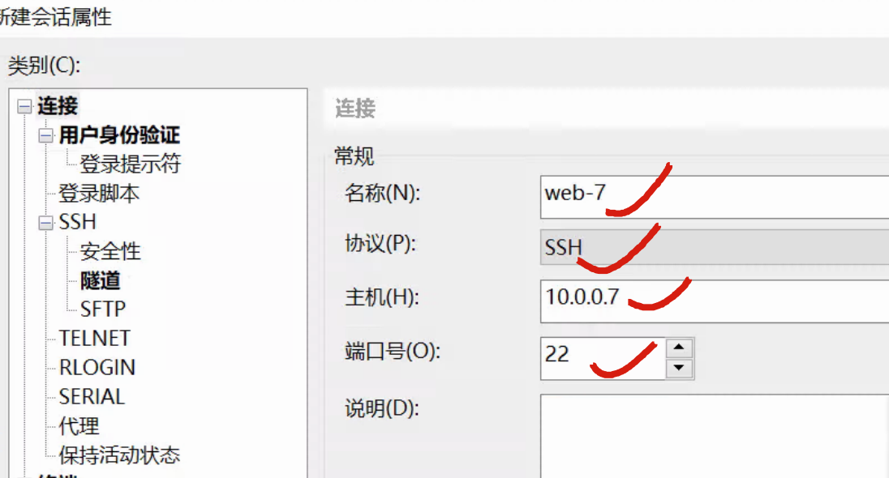
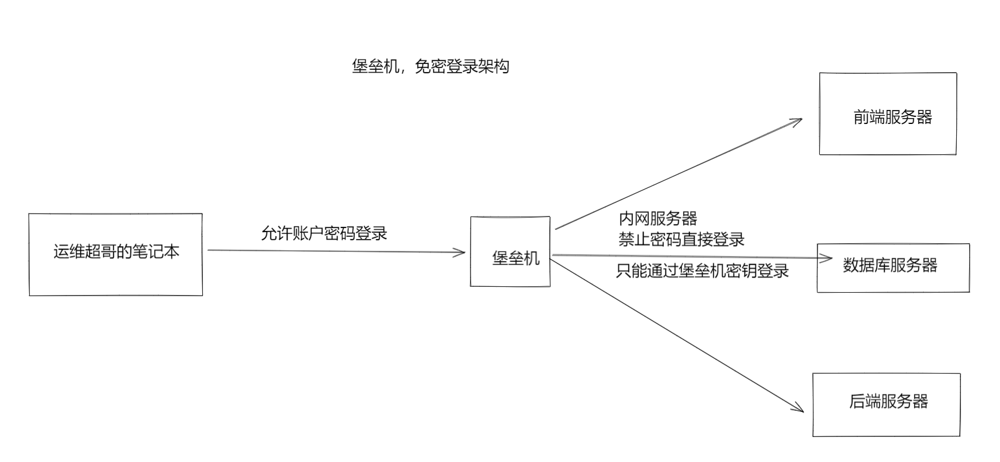
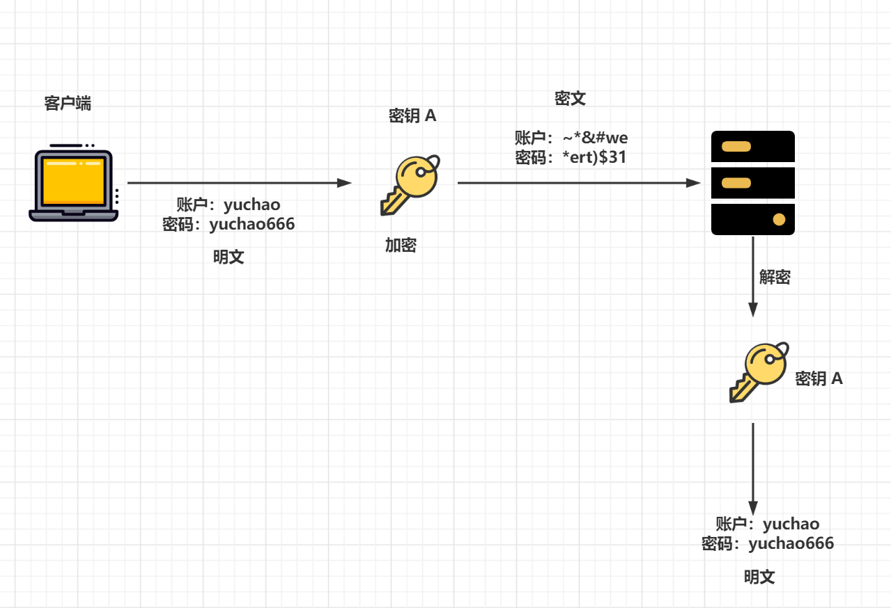
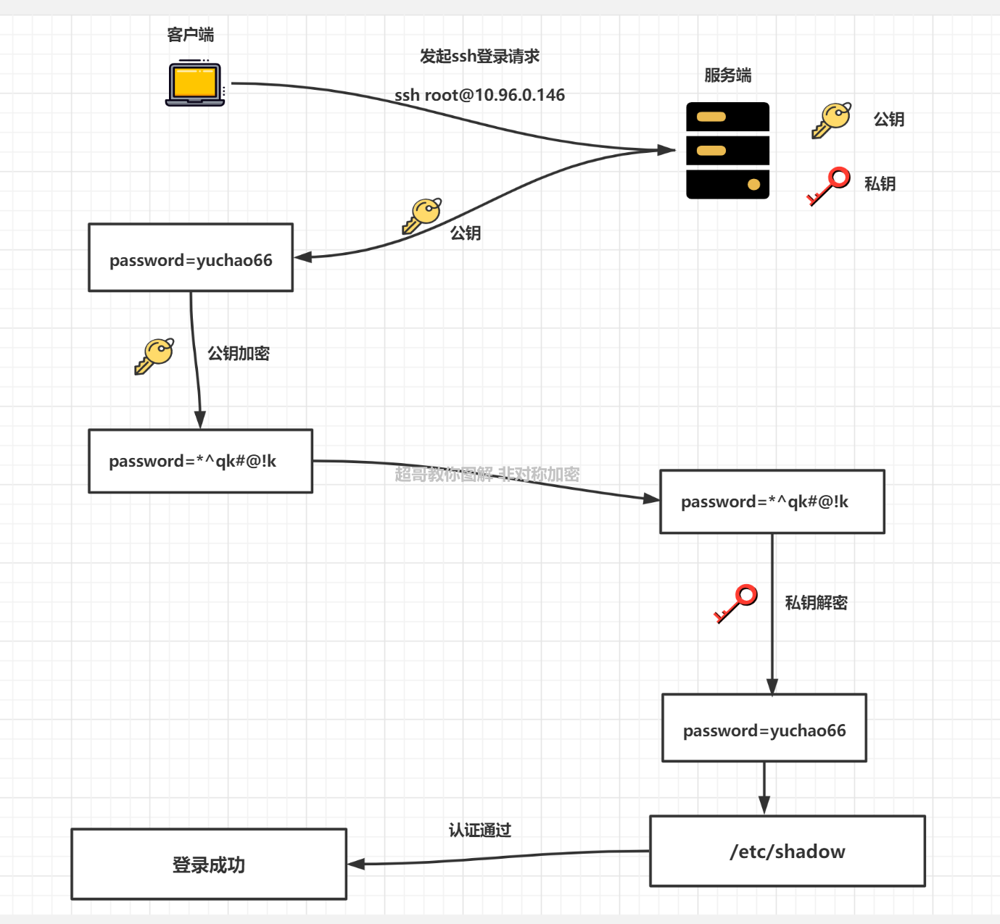
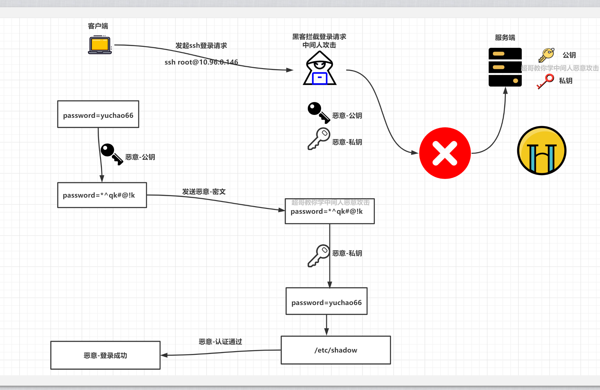

10--SSH进阶
1、ssh客户端工具
- 查看参数和帮助方法
==ssh --help==
==man ssh==
常见参数
- windows
- linux
- macos
- 提供的ssh命令，会有些区别，查看帮助后使用即可。
linux下ssh远程登录
简单用法
[root@web-7 ~]#ssh root@10.0.0.41
root@10.0.0.41's password:
Last login: Fri Apr 22 16:48:04 2022 from 10.0.0.7
-p ssh端口
-l 远程用户名，如果不指定用户，会使用当前默认的登录用户名。
[root@web-7 ~]#ssh -p 22 -l root 10.0.0.41
root@10.0.0.41's password:
Last login: Fri Apr 22 17:44:00 2022 from 10.0.0.7
windows下ssh登录
cmd命令行提供的ssh命令
[C:\~]$ ssh root@10.0.0.7 22
Connecting to 10.0.0.7:22...
Connection established.
To escape to local shell, press 'Ctrl+Alt+]'.
WARNING! The remote SSH server rejected X11 forwarding request.
Last login: Fri Apr 22 17:33:13 2022
[root@web-7 ~]#
使用xshell等工具

2、踢掉用户下线pkill
who命令
w命令
查看当前机器登录用户信息
踢掉用户下线的命令，根据终端名干掉
[root@web-7 ~]#pkill -kill -t pts/0
或者直接干掉进程
[root@web-7 ~]#ps -ef|grep ssh
root 1601 1 0 17:24 ? 00:00:00 /usr/sbin/sshd -D
root 2026 1601 0 17:49 ? 00:00:00 sshd: root@pts/1
root 2084 1601 0 17:50 ? 00:00:00 sshd: root@pts/0
root 2105 1601 1 17:50 ? 00:00:00 sshd: root@pts/2
root 2127 2028 0 17:50 pts/1 00:00:00 grep --color=auto ssh
[root@web-7 ~]#kill 2105
免密登录（重点）
经过一段时间后，开发人员和运维人员都觉得使用密码SSH登录的方式太麻烦（每次登录都需要输入密码，难记又容易泄露密码）。
为了安全和便利性方面考虑，要求运维人员给所有服务器实现免密码登录。
基于公私钥的认证（免密码登录）
基于密钥对认证，也就是所谓的免密码登录，理解免密登录原理：
1.机器A 想免密码登录 机器B
2.机器A得发送自己的公钥给机器B

1.master-61机器生成一对公私钥
2.master-61机器发送自己的公钥，ssh-copy-id命令发给 web-7，此时需要输入web-7的账号密码，输入正确密码后。
3.web-7机器将master-61的公钥写入本地的~/.ssh/authorized_keys 已信任的公钥文件中
4.下一次master-61再次ssh登录web-7，web-7去本地的~/.ssh/authorized_keys文件里搜索master-61的公钥，如果找到了，生成随机字符串
5.web-7将生成的随机字符串结合master-61的公钥加密处理，返回给master-61
6.master-61拿到该加密后的随机字符串，使用自己的私钥解密，解密成功后将原始随机字符串发给web-7
7.web-7比对该随机字符串，确认正确，允许登录。
基于公私钥认证实践（重要）
原理很复杂、但是操作很简单，其实就几条命令，生成了几个配置文件；
但是于超老师给你讲清楚原理，了解其背后的通信过程，无论是排错，还是ssh出现安全问题，回头思考这个流程，就能摸索出解决方案。

免密登录步骤
1.创建秘钥对，全部回车，默认即可
[root@master-61 ~]#ssh-keygen
Generating public/private rsa key pair.
Enter file in which to save the key (/root/.ssh/id_rsa):
Created directory '/root/.ssh'.
Enter passphrase (empty for no passphrase):
Enter same passphrase again:
Your identification has been saved in /root/.ssh/id_rsa.
Your public key has been saved in /root/.ssh/id_rsa.pub.
The key fingerprint is:
SHA256:ENZzEVp+qIjG+Cb/MBko8anhY8JGrbqLhR8+6ZI9B2o root@master-61
The key's randomart image is:
+---[RSA 2048]----+
| o. +o |
| . .o+.. |
|. . .oo . |
| o.= . o . . |
|o.=.= . S |
|+=oo o |
|+@+o* |
|XE*=.o |
|*=++... |
+----[SHA256]-----+
2.查看生成的公私钥
[root@master-61 ~]#ls -l ~/.ssh/
total 8
-rw------- 1 root root 1679 Apr 22 19:43 id_rsa
-rw-r--r-- 1 root root 396 Apr 22 19:43 id_rsa.pub
3.发送公钥给目标机器
[root@master-61 ~]#ssh-copy-id web-7
/usr/bin/ssh-copy-id: INFO: Source of key(s) to be installed: "/root/.ssh/id_rsa.pub"
The authenticity of host 'web-7 (10.0.0.7)' can't be established.
ECDSA key fingerprint is SHA256:Csqwr63+SZRFFOug/IGoFTgRe8hDSI/QalSMBcC6IaU.
ECDSA key fingerprint is MD5:4c:9a:37:e2:5b:b5:de:a8:bf:90:b5:28:d8:5b:ac:60.
Are you sure you want to continue connecting (yes/no)? yes
/usr/bin/ssh-copy-id: INFO: attempting to log in with the new key(s), to filter out any that are already installed
/usr/bin/ssh-copy-id: INFO: 1 key(s) remain to be installed -- if you are prompted now it is to install the new keys
root@web-7's password:
Number of key(s) added: 1
Now try logging into the machine, with: "ssh 'web-7'"
and check to make sure that only the key(s) you wanted were added.
4.测试是否可以免密登录
[root@master-61 ~]#ssh root@web-7
Last login: Fri Apr 22 17:50:42 2022 from 10.0.0.1
[root@web-7 ~]#
检查web-7上的authorized_keys
[root@web-7 ~]#cat ~/.ssh/authorized_keys
ssh-rsa AAAAB3NzaC1yc2EAAAADAQABAAABAQDRsvpXAYBkQ/q3X9Rs7s+W5ppBaHj4zqtLk6Dvk0yvpFYIJvgvK27Q0hZWE5lXgiSpeYY3wXsg0SLI0/DAEU+mi2mrSUaCMDyia9A0vtpKsu574QDl2eOgU46sBrKfUw1vxC5Ow5awCzHu6RCdvo6mqVLDfqBG4e+pUEvYP4XVL4LMPqK0Wp5OZNprtIXzu57xE+wNUcbwC+hWc/2VSyBAtu9VXtVebrUk9t8hVAhKc2e7m8feexd+/WK5a4/FTj7oQb6P7GK+7gVXY6Thgwv54uIR9gSDU1U5aqEI9ng0xPUyI5KDMWjn2O2mfPY2tMF9ZsAgXJ/S7daMefRzdFvp root@master-61
检验master-61的公私钥文件
公钥
[root@master-61 ~]#cat ~/.ssh/id_rsa.pub
ssh-rsa AAAAB3NzaC1yc2EAAAADAQABAAABAQDRsvpXAYBkQ/q3X9Rs7s+W5ppBaHj4zqtLk6Dvk0yvpFYIJvgvK27Q0hZWE5lXgiSpeYY3wXsg0SLI0/DAEU+mi2mrSUaCMDyia9A0vtpKsu574QDl2eOgU46sBrKfUw1vxC5Ow5awCzHu6RCdvo6mqVLDfqBG4e+pUEvYP4XVL4LMPqK0Wp5OZNprtIXzu57xE+wNUcbwC+hWc/2VSyBAtu9VXtVebrUk9t8hVAhKc2e7m8feexd+/WK5a4/FTj7oQb6P7GK+7gVXY6Thgwv54uIR9gSDU1U5aqEI9ng0xPUyI5KDMWjn2O2mfPY2tMF9ZsAgXJ/S7daMefRzdFvp root@master-61
私钥文件
[root@master-61 ~]#ls -l ~/.ssh/id_rsa
-rw------- 1 root root 1679 Apr 22 19:43 /root/.ssh/id_rsa
已连接过的主机指纹
[root@master-61 ~]#cat ~/.ssh/known_hosts
web-7,10.0.0.7 ecdsa-sha2-nistp256 AAAAE2VjZHNhLXNoYTItbmlzdHAyNTYAAAAIbmlzdHAyNTYAAABBBL/Sx3bAaNcKqo7pC4FTYk3gyZ6hd1D/DKUWVfOd4gZb/8XwlAxWauceHe/BAsW5Z8pEmG6AjSyHM8ckOs94c7Y=
配置文件总结
在整个免密登录过程中，涉及的配置文件
客户端，需要生成公私钥，检查如下目录
[root@master-61 ~]#ls ~/.ssh/
id_rsa id_rsa.pub known_hosts
服务端，记录客户端的公钥
[root@web-7 ~]#ls ~/.ssh/
authorized_keys id_rsa id_rsa.pub known_hosts
其实整个过程就
1个目录 ~/.ssh/
四个配置文件
authorized_keys id_rsa id_rsa.pub known_hosts
SSH远程执行命令
ssh不仅可以用来连接服务器、也可以远程执行命令
ssh远程执行命令不会登录到服务器，只会远程的执行命令，返回执行结果就结束了
查看远程机器的信息
查看主机名
[root@master-61 ~]#ssh root@10.0.0.7 hostname
web-7
查看内存
[root@master-61 ~]#ssh root@10.0.0.7 free -m
total used free shared buff/cache available
Mem: 1982 91 1654 9 235 1720
Swap: 0 0 0
远程创建文件
[root@master-61 ~]#ssh root@10.0.0.7 touch /opt/新年快乐.log
[root@master-61 ~]#
[root@master-61 ~]#ssh root@10.0.0.7 ls /opt -l
total 0
-rw-r--r-- 1 root root 0 Apr 22 20:16 新年快乐.log
远程安装软件redis
[root@master-61 ~]#ssh root@10.0.0.7 yum install redis -y
远程查看服务状态
[root@master-61 ~]#ssh root@10.0.0.7 systemctl status redis
● redis.service - Redis persistent key-value database
Loaded: loaded (/usr/lib/systemd/system/redis.service; disabled; vendor preset: disabled)
Drop-In: /etc/systemd/system/redis.service.d
└─limit.conf
Active: inactive (dead)
ssh安全防御
安全因素
1.ssh支持密码连接、秘钥连接两个方式，为了密码别泄露，你得关闭密码登录
2.默认端口号全世界都知道是22，你得改掉
3.如果客户端私钥被窃取，root服务器也就危险了
ssh优化
禁止密码登录，只允许公钥登录
[root@web-7 ~]#grep -Ei '^(pubkey|password)' /etc/ssh/sshd_config
PubkeyAuthentication yes
PasswordAuthentication no
修改默认22端口
Port 22422
限制主机登录条件、设定iptables规则，只允许跳板机的流量登录，其他机器的流量全部禁止。
1.安装防火墙
yum install iptables-services -y
2.开启内核防火墙功能，载入防火墙功能
[root@web-7 ~]#modprobe ip_tables
[root@web-7 ~]#modprobe iptable_filter
[root@web-7 ~]#modprobe iptable_nat
[root@web-7 ~]#modprobe ip_conntrack
[root@web-7 ~]#modprobe ip_conntrack_ftp
[root@web-7 ~]#modprobe ip_nat_ftp
[root@web-7 ~]#modprobe ipt_state
3.禁用firwalld服务、单独开启iptables服务
[root@web-7 ~]#systemctl stop firewalld
[root@web-7 ~]#systemctl disable firewalld
[root@web-7 ~]#systemctl start iptables
4.清空默认规则，单独设定一条规则
[root@web-7 ~]#iptables -F
[root@web-7 ~]#
[root@web-7 ~]#iptables -X
[root@web-7 ~]#iptables -Z
[root@web-7 ~]#iptables -A INPUT ! -s 172.16.1.61 -p tcp --dport 22422 -j DROP
5.查看防火墙规则
[root@web-7 ~]#iptables -L
Chain INPUT (policy ACCEPT)
target prot opt source destination
DROP tcp -- !172.16.1.61 anywhere tcp dpt:22422
Chain FORWARD (policy ACCEPT)
target prot opt source destination
Chain OUTPUT (policy ACCEPT)
target prot opt source destination
登录测试，此时只有master-61机器可以登录
[root@master-61 ~]#ssh -p 22422 root@172.16.1.7
Last login: Sat Apr 23 17:54:21 2022 from 172.16.1.61
[root@web-7 ~]#
其他机器，流量根本是过不去的
[root@nfs-31 ~]#ssh -p 22422 root@172.16.1.7
卡死，无法登录
扩展总结（ssh加密算法）
图解SSH加密算法
对称加密算法
- des 对称的公钥加密算法,安全低，数据传输速度快；使用同一个秘钥进行加密或解密

非对称加密算法（ssh连接就是非对称加密）
rsa 非对称的公钥加密算法,安全,数据传输速度慢 ，SSH默认的加密算法
上面的数据是加密了，这个钥匙，如果丢了怎么办？被别人恶意获取到不还是危险吗？

中间人攻击（了解）

【Client如何保证自己接收到的公钥就是来源于目标Server机器的？】
上图看似理所当然，然而此时一位不愿意透露姓名的黑客路过，并且做了如下事情
- 拦截客户端的登录请求
- 向客户端发送
黑客自己的公钥，这时客户端可能并不知道，并且用了此公钥对数据进行了加密 - 客户端发送
假的公钥，加密后的数据，黑客拿到了此加密后的数据，再用自己的私钥进行解密 - 客户端的数据此时已被黑客截取
ssh通过指纹确认解决该文件
回顾上述于超老师讲解的ssh首次连接，用户进行服务器的指纹确认，再和服务器的公钥对比即可。
SSH批量分发密钥
目前ssh免密登录的问题
每一台首次进行免密连接的机器，都需要如下操作
1.手动生成秘钥对
2.服务端首次连接的指纹确认需要输入yes、正确的密码
3.修改sshd的配置文件，修改端口，监听ip，秘钥方式，禁止密码登录等；
4.重启sshd服务
5.测试是否可以免密登录
这些步骤，机器少还可以，如果机器数量较多，那工作量就很大，人为难以维护；
并且全部流程手动维护，难免敲错，遗漏步骤等，也难以进行最后的验证，因此必须实现脚本自动化；
任务需求
1.新创建好一个机器，在master-61机器上执行一次脚本，上述免密登录操作自动完成，无须人工介入。
记录免密登录步骤
交互记录:
1.生成公私钥
ssh-keygen
2.连接确认，输入yes
ssh-copy-id 10.0.0.31
3.输入密码
ssh-copy-id 10.0.0.31
解决需要人为交互的部分
解决公钥分发的交互
1.第一次指纹确认，如何解决这个yes or no的输入？
[root@master-61 ~]#ssh-copy-id root@172.16.1.31
/usr/bin/ssh-copy-id: INFO: Source of key(s) to be installed: "/root/.ssh/id_rsa.pub"
The authenticity of host '172.16.1.31 (172.16.1.31)' can't be established.
ECDSA key fingerprint is SHA256:Csqwr63+SZRFFOug/IGoFTgRe8hDSI/QalSMBcC6IaU.
ECDSA key fingerprint is MD5:4c:9a:37:e2:5b:b5:de:a8:bf:90:b5:28:d8:5b:ac:60.
Are you sure you want to continue connecting (yes/no)?
解决办法，添加参数,不检查指纹
ssh-copy-id 172.16.1.31 -o StrictHostKeyChecking=no
2.第二次需要人为操作，输入首次登录的密码，可以通过sshpass命令传入密码
yum install sshpass -y
sshpass -p '123123' ssh-copy-id 172.16.1.31 -o StrictHostKeyChecking=no
解决公私钥创建的交互
3.生成密钥对的环节，也就是指定公私钥存储到哪里
指定key输出位置
ssh-keygen -f /root/.ssh/id_rsa.pub
4.跳过输入密码，直接-N指定空密码即可
ssh-keygen -f /root/.ssh/id_rsa.pub -N ''
脚本原型
注意先安装好sshpass命令
yum install sshpass -y
login_key.sh
#!/bin/bash
#1.跳过输入公私钥创建的密码
echo "正在创建公私钥..."
if [ -f /root/.ssh/id_rsa ]
then
echo "密钥对已经存在"
else
ssh-keygen -f /root/.ssh/id_rsa -N '' > /tmp/create_ssh.log 2>&1
fi
#2.自动输入目标机器密码
echo "正在分发公钥中..."
for ip in {7,8,9,31}
do
sshpass -p '123123' ssh-copy-id 172.16.1.${ip} -o StrictHostKeyChecking=no > /tmp/create_ssh.log 2>&1
echo "正在验证免密登录结果中...."
echo "远程获取到主机名: $(ssh 172.16.1.${ip} hostname)"
done
此时可以手动验证免密登录
[root@master-61 ~]#ssh root@172.16.1.31
Last login: Fri Apr 22 20:28:56 2022 from 10.0.0.1
[root@nfs-31 ~]#
ssh大作业（根据要求部署）
建议登录的别名
alias sshweb7='ssh root@172.16.1.7 -p 22999'
alias sshweb8='ssh root@172.16.1.8 -p 22999'
alias sshweb9='ssh root@172.16.1.9 -p 22999'
alias sshnfs31='ssh root@172.16.1.31 -p 22999'
alias sshrsync41='ssh root@172.16.1.41 -p 22999'
windows部分
让windows可以免密登录master-61机器
master-61管理机
1.修改ssh端口为22999
2.关闭用户名密码登录
3.开启通过公私钥登录
被管理机
1.修改ssh端口为22999
2.关闭用户名密码登录
3.开启通过公私钥登录
4.指定监听内网地址，172.16.1.xx
要求部署效果
1.master-61机器只能通过公私钥登录，禁止用户密码连接
2.所有主机的ssh端口全都是22999
3.被管理的机器只能通过内网、且使用公私钥连接。
进阶篇脚本操作(可选题)
1.管理机自动创建公私钥
2.管理机自动分发公钥到备管理机
3.远程修改被管理机的ssh连接端口为22999，监听地址是172.16.1.xx
4.远程修改被管理机不允许密码登录，只能是密钥登录
5.修改完毕后，验证是否生效，远程查看所有被管理主机的主机名
参考写法
- 思路不唯一
可优化还很多
脚本是一个工艺品，不断打磨，不断完善
批量修改配置文件(参考)
#1.管理机自动创建公私钥
echo "正在创建公私钥..."
if [ -f /root/.ssh/id_rsa ]
then
echo "密钥对已经存在,请检查！"
else
ssh-keygen -f /root/.ssh/id_rsa -N '' > /tmp/create_ssh.log 2>&1
fi
#2.管理机自动分发公钥到备管理机
echo "正在分发公钥中...分发的机器列表是{7,8,31,41}"
for ip in {7,8,31,41}
do
sshpass -p '123123' ssh-copy-id 172.16.1.${ip} -o StrictHostKeyChecking=no > /tmp/create_ssh.log 2>&1
echo "正在验证免密登录结果中...."
echo "远程获取到主机名: $(ssh 172.16.1.${ip} hostname)"
done
#3.远程修改被管理机的ssh连接端口为22999，监听地址是172.16.1.xx
for ip in {7,8,31,41}
do
echo "修改172.16.1.${ip}的ssh端口中..."
ssh root@172.16.1.${ip} "sed -i '/Port 22/c Port 22999' /etc/ssh/sshd_config"
done
#4.远程修改被管理机不允许密码登录，只能是密钥登录
for ip in {7,8,31,41}
do
echo "禁止密码登录参数修改中...当前操作的机器是172.16.1.${ip}"
ssh root@172.16.1.${ip} "sed -i '/^PasswordAuthentication/c PasswordAuthentication no' /etc/ssh/sshd_config"
echo "允许公钥登录参数修改中...当前操作的机器是172.16.1.${ip}"
ssh root@172.16.1.${ip} "sed -i '/PubkeyAuthentication/c PubkeyAuthentication yes' /etc/ssh/sshd_config"
done
重启ssh服务以及验证结果（参考）
1.批量重启sshd服务
for ip in {7,8,31,41}
do
echo "重启sshd服务中，当前操作的机器是172.16.1.${ip}"
ssh root@172.16.1.${ip} "systemctl restart sshd"
done
2.修改完毕后，验证是否生效，远程查看所有被管理主机的主机名
for ip in {7,8,31,41}
do
echo "远程获取主机名中，当前操作的机器是172.16.1.${ip}"
ssh -p 22999 root@172.16.1.${ip} "hostname"
echo "==========================================="
done
3.远程检查sshd端口
for ip in {7,8,31,41}
do
echo "远程查看sshd端口中，当前操作的机器是172.16.1.${ip}"
ssh -p 22999 root@172.16.1.${ip} "netstat -tunlp|grep sshd"
echo "===================================="
done
4.远程检查配置文件
for ip in {7,8,31,41}
do
echo "远程查看sshd端口中，当前操作的机器是172.16.1.${ip}"
ssh -p 22999 root@172.16.1.${ip} "grep -Ei '^(pubkey|password)' /etc/ssh/sshd_config"
echo "===================================="
done
变态型作业
不是于超老师狠，而是真的不希望你假期光剩下玩了，😁哈哈
作业要求
1.在master-61机器上远程一键安装rsyncd服务端，修改配置文件，且正确启动，确保可以rsync数据同步
2.在master-61机器上远程一键安装nfs服务端，修改配置文件，且正确启动，确保可以正确挂载
3.在master-61机器上远程一键安装lsyncd服务，修改配置文件，且正确启动,确保可以实现数据实时同步
4.在master-61机器上远程一键部署web-7的nginx服务，修改配置文件端口为81，且挂载nfs的共享目录，确保正确可访问nginx页面
5.最终效果
- web-7可以正常挂载nfs共享目录且权限是所有用户被映射为www（uid=11111），允许读写
- web-7用户上传那文件夹后，nfs服务器数据自动同步到backup服务器。
参考答案（🤩）
学习方法建议
1.理解部署架构
2.手敲部署过程，别复制粘贴，否则你永远搞不清其中每一个命令的语法，可能遇见的坑。

批量修改sshd配置文件
#1.管理机自动创建公私钥
echo "正在创建公私钥..."
if [ -f /root/.ssh/id_rsa ]
then
echo "密钥对已经存在,请检查！"
else
ssh-keygen -f /root/.ssh/id_rsa -N '' > /tmp/create_ssh.log 2>&1
fi
echo '====================分割线=============================='
#2.管理机自动分发公钥到备管理机
echo "正在分发公钥中...分发的机器列表是{7,8,31,41}"
for ip in {7,8,9,31,41}
do
sshpass -p '123123' ssh-copy-id 172.16.1.${ip} -o StrictHostKeyChecking=no > /tmp/create_ssh.log 2>&1
echo "正在验证免密登录结果中...."
echo "远程获取到主机名: $(ssh 172.16.1.${ip} hostname)"
done
echo '====================分割线=============================='
#3.远程修改被管理机的ssh连接端口为22999，监听地址是172.16.1.xx
for ip in {7,8,9,31,41}
do
echo "修改172.16.1.${ip}的ssh端口中..."
ssh root@172.16.1.${ip} "sed -i '/Port 22/c Port 22999' /etc/ssh/sshd_config"
done
echo '====================分割线=============================='
#4.远程修改被管理机不允许密码登录，只能是密钥登录
for ip in {7,8,9,31,41}
do
echo "禁止密码登录参数修改中...当前操作的机器是172.16.1.${ip}"
ssh root@172.16.1.${ip} "sed -i '/^PasswordAuthentication/c PasswordAuthentication no' /etc/ssh/sshd_config"
echo "允许公钥登录参数修改中...当前操作的机器是172.16.1.${ip}"
ssh root@172.16.1.${ip} "sed -i '/PubkeyAuthentication/c PubkeyAuthentication yes' /etc/ssh/sshd_config"
done
echo '====================分割线=============================='
# 5.修改监听内网地址
for ip in {7,8,9,31,41}
do
echo "修改监听地址中...当前操作的机器是172.16.1.${ip}"
ssh root@172.16.1.${ip} "sed -i '/ListenAddress 0.0.0.0/c ListenAddress 172.16.1.${ip}' /etc/ssh/sshd_config"
done
echo '====================分割线=============================='
# 6.批量验证ssh修改情况
for ip in {7,8,9,31,41}
do
echo "当前查看的机器是172.16.1.${ip}"
ssh root@172.16.1.${ip} "grep -E '^(Port|PasswordAuthentication|PubkeyAuthentication|ListenAddress)' /etc/ssh/sshd_config"
done
echo '====================脚本执行完毕=============================='
批量重启ssh服务验证结果
1.批量重启sshd服务
for ip in {7,8,9,31,41}
do
echo "重启sshd服务中，当前操作的机器是172.16.1.${ip}"
ssh root@172.16.1.${ip} "systemctl restart sshd"
echo "==========================================="
done
2.远程查看主机信息
[root@master-61 ~]#cat show_config.sh
for ip in {7,8,9,31,41}
do
echo "远程获取主机名中，当前操作的机器是172.16.1.${ip}"
ssh -p 22999 root@172.16.1.${ip} "hostname"
echo "远程获取主机sshd配置信息，当前操作的机器是172.16.1.${ip}"
ssh -p 22999 root@172.16.1.${ip} "grep -E '^(Port|PasswordAuthentication|PubkeyAuthentication|ListenAddress)' /etc/ssh/sshd_config"
echo "远程查看sshd端口情况，当前操作的机器是172.16.1.${ip}"
ssh -p 22999 root@172.16.1.${ip} "netstat -tunlp|grep sshd|grep -v grep"
echo "========================分割线============================="
done
一般情况下，内网机器是需要ssh互相登录的，因此防火墙规则无须添加了。
阶段3：远程一键安装综合备份架构
- 上述的阶段2，一键搭建好了sshd的安全连接环境
- 只要编写一键安装服务的脚本即可
- 注意服务的启动顺序
rsync服务
# 1.安装
yum install rsync -y
# 2.配置文件
cat > /etc/rsyncd.conf << 'EOF'
uid = www
gid = www
port = 873
fake super = yes
use chroot = no
max connections = 200
timeout = 600
ignore errors
read only = false
list = false
auth users = rsync_backup
secrets file = /etc/rsync.passwd
log file = /var/log/rsyncd.log
#####################################
[backup]
comment = yuchaoit.cn about rsync
path = /backup
EOF
# 3.创建用户
groupadd www -g 666
useradd www -g 666 -u 666 -M -s /sbin/nologin
# 4.创建目录,授权
mkdir -p /backup
chown -R www.www /backup
# 5.创建密码文件，授权
echo 'rsync_backup:yuchao666' > /etc/rsync.passwd
chmod 600 /etc/rsync.passwd
# 6.启动服务
systemctl start rsyncd
systemctl enable rsyncd
# 7.检查服务
netstat -tunlp|grep rsync
远程拷贝、远程安装
[root@master-61 ~]#scp -P 22999 install_rsync.sh root@172.16.1.41:/opt/
[root@master-61 ~]#ssh -p 22999 root@172.16.1.41 "bash /opt/install_rsync.sh"
nfs服务(nfs-31)
# 1.安装服务
yum install nfs-utils rpcbind -y
# 2.创建nfs限定的用户、组
groupadd www -g 666
useradd www -g 666 -u 666 -M -s /sbin/nologin
# 3.创建共享目录，修改权限
mkdir /nfs-yuchao-nginx
chown -R www.www /nfs-yuchao-nginx
# 4.创建配置文件
cat > /etc/exports <<EOF
/nfs-yuchao-nginx 172.16.1.0/24(rw,sync,all_squash,anonuid=666,anongid=666)
EOF
# 5.启动服务
systemctl start nfs
# 6.检查服务
showmount -e 127.0.0.1
远程安装
1.远程发送配置文件
[root@master-61 ~]#scp -P 22999 install_nfs.sh root@172.16.1.31:/opt/
install_nfs.sh
2.远程执行
[root@master-61 ~]#ssh -p 22999 root@172.16.1.31 "bash /opt/install_nfs.sh"
nfs+lsyncd服务
# 1.安装服务
yum install lsyncd -y
# 2.生成配置文件
cat >/etc/lsyncd.conf <<EOF
settings {
logfile ="/var/log/lsyncd/lsyncd.log",
statusFile ="/var/log/lsyncd/lsyncd.status",
inotifyMode = "CloseWrite",
maxProcesses = 8,
}
sync {
default.rsync,
source = "/nfs-yuchao-nginx",
target = "rsync_backup@172.16.1.41::backup",
delete= true,
exclude = {".*"},
delay=1,
rsync = {
binary = "/usr/bin/rsync",
archive = true,
compress = true,
verbose = true,
password_file="/etc/rsync.passwd",
_extra={"--bwlimit=200"}
}
}
EOF
# 3.创建密码文件
echo "yuchao666" > /etc/rsync.passwd
chmod 600 /etc/rsync.passwd
# 4.启动
systemctl start lsyncd
# 5.检查服务
ps -ef|grep lsyncd |grep -v grep
远程安装lsyncd
1.远程发送配置文件
[root@master-61 ~]#scp -P 22999 install_lsyncd.sh root@172.16.1.31:/opt/install_lsyncd.sh
2.远程执行
[root@master-61 ~]#ssh -p 22999 root@172.16.1.31 "bash /opt/install_lsyncd.sh"
测试rsync+nfs
[root@master-61 ~]#ssh -p 22999 root@172.16.1.31 "touch /nfs-yuchao-nginx/超哥666.png"
[root@master-61 ~]#
[root@master-61 ~]#ssh -p 22999 root@172.16.1.41 "ls /backup"
超哥666.log
超哥666.png
Web7/8/9机器
# 1.安装服务
yum install nginx -y
# 2.创建配置文件
cat >/etc/nginx/nginx.conf <<EOF
worker_processes auto;
error_log /var/log/nginx/error.log;
pid /run/nginx.pid;
# Load dynamic modules. See /usr/share/doc/nginx/README.dynamic.
include /usr/share/nginx/modules/*.conf;
events {
worker_connections 1024;
}
http {
log_format main '$remote_addr - $remote_user [$time_local] "$request" '
'$status $body_bytes_sent "$http_referer" '
'"$http_user_agent" "$http_x_forwarded_for"';
access_log /var/log/nginx/access.log main;
sendfile on;
tcp_nopush on;
tcp_nodelay on;
keepalive_timeout 65;
types_hash_max_size 4096;
include /etc/nginx/mime.types;
default_type application/octet-stream;
server {
listen 81;
server_name localhost;
location / {
root html;
index index.html;
}
}
}
EOF
# 3.启动服务
systemctl start nginx
# 4.检查服务
netstat -tunlp|grep nginx
# 5.挂载目录
yum install nfs-utils -y
mount -t nfs 172.16.1.31:/nfs-yuchao-nginx /usr/share/nginx/html
远程部署
[root@master-61 ~]#scp -P 22999 install_nginx.sh root@172.16.1.7:/opt
[root@master-61 ~]#ssh -p 22999 root@172.16.1.7 "bash /opt/install_nginx.sh"
for server in {7,8,9}
do
scp -P 22999 install_nginx.sh root@172.16.1.${server}:/opt
ssh -p 22999 root@172.16.1.${server} "bash /opt/install_nginx.sh"
done
最终测试
1.在共享存储中，创建网页数据文件，提供给所有web机器使用
cat >index.html<<EOF
<meta charset=utf8>
心若在、梦就在。
于超老师带你学linux，加油吧少年。
EOF
scp -P 22999 index.html root@172.16.1.31:/nfs-yuchao-nginx/
2.检查数据备份情况
ssh -p 22999 root@172.16.1.41 "ls -l /backup"
3.检查网站情况
for web in {7,8,9}
do
curl 172.16.1.${web}:81
done
4. 浏览器访问
http://10.0.0.7:81/
http://10.0.0.8:81/
http://10.0.0.9:81/
5.再次修改页面，查看数据
cat >index.html<<EOF
<meta charset=utf8>
心若在、梦就在。
于超老师带你学linux，加油吧少年。
EOF
scp -P 22999 index.html root@172.16.1.31:/nfs-yuchao-nginx/
[root@master-61 ~]#ssh -p 22999 root@172.16.1.41 "cat /backup/index.html"
<meta charset=utf8>
心若在、梦就在。
于超老师带你学linux，加油吧少年。